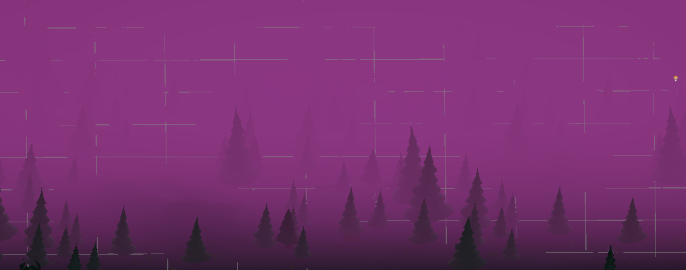

← Back to Portfolio
Monster Loves You Too! - Project Details
Genre: Graphic Novel Adventure, RPG
Role: Lead Designer, Unity Developer

Overview
This project is an immersive graphic novel where player choices shape the future of a young monster growing up in a complex society. My primary focus was on implementing the branching narrative dialogue system and developing unique mini-game mechanics using the Unity engine.
Key Features Developed:
- **Branching Dialogue System:** Designed and scripted a complex, choice-driven narrative flow using custom editor tools.
- **Character Stats & Consequences:** Implemented an invisible reputation and stats system that reacts dynamically to player actions.
- **Art Pipeline Integration:** Managed the import and optimization of 2D assets for high-resolution display within the 3D environment.
Find more details and updates on the game's development blog.
Get It on Steam!